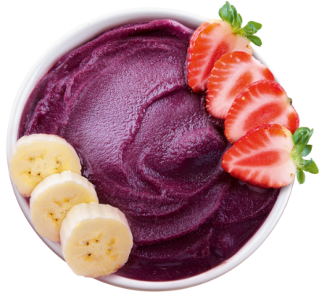

Açaí

Delicious Açaí
Description
This refreshing açaí bowl is a delightful tropical treat. Made with açaí berries, ripe banana, milk, and a touch of guarana syrup, it's a creamy and nutritious delight. Topped with granola and an assortment of fresh fruits like strawberries, bananas, and blueberries, it provides a burst of flavors and textures. Drizzle with honey for some added sweetness if desired. Perfect for breakfast or a healthy snack, this açaí bowl will transport you to a tropical paradise with every spoonful.
Ingredients
- 200g açaí pulp
- 1 ripe banana
- 100ml milk
- 2 tablespoons guarana syrup
- Granola to taste
- Fresh fruits to taste (strawberries, bananas, blueberries, etc.)
- 1 tablespoon honey (optional)
Instructions
- In a blender, add the açaí pulp, banana, milk, and guarana syrup.
- Blend all the ingredients until you get a smooth and creamy mixture.
- If you prefer a thicker consistency, add less milk.
- In a bowl, place the açaí mixture.
- Top it with granola and your favorite fresh fruits.
- If desired, drizzle some honey to sweeten it.
- Serve immediately and enjoy your delicious açaí bowl!